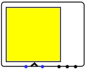

Rgb Video
Rgb Video
| Librairie : | Entrée/Sortie |
| Introduction :: | 3.2.0 |
| Apparence : |  |
Comportement
Broches
The pines are to the south and presented in order from east to west.
- First from left
- Input: Reset
- Second with a triangle
- Input: Clock
- Third
- Input: Write Enable
- Fourth
- Input: X coordinate
- Fifth
- Input: Y coordinate
- The last one on the right
- Input: Data
Attributs
- Cursor
- If a cursor is visible on the screen
- Reset Comportement
- Whether the reset signal is synchronous with the clock or not.
- Color Model
- The data model of the color data bus (3x5bits, 3x8bits...)
- Width in pixels
- Height
- Height in pixels
- Scale
- Determines the magnification factor
Comportement de l'outil pousser
None.
Comportement de l'outil text
None.
Retour à Référence de la bibliothèque